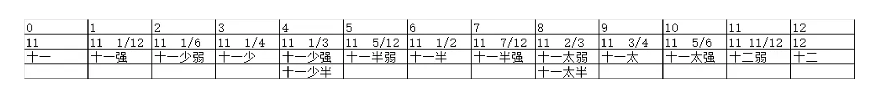

首页
欢迎来到「九章算术编译器交互式学习工具」！
九章算术编译器交互式学习工具是参加计算机设计大赛的一款创新作品。它是一个编译器，能够将用户输入的算术表达式编译并计算出结果。同时，通过交互式的方式，将编译过程展示给用户，帮助他们理解九章算术中的语法和运算规则。
此文档来自于制作者们独立总结的《九章算术》中的语法规则以及数学问题。
创作立意
该作品的创作立意是为了提供一种交互式的学习工具，帮助用户更好地理解九章算术的语法和运算规则。九章算术作为中国古代算术之一，其独特的计算方法和思维方式对于培养逻辑思维和数学能力有着重要的作用。通过将编译器与交互式学习相结合，我们希望能够以一种有趣的方式激发用户的学习兴趣，提高他们对九章算术的理解和运用能力。
作品特色
1. 编译器功能：该作品具备编译器功能，可以将用户输入的九章算术表达式编译并计算出结果，实现自动化计算。
2. 交互式学习：作品以交互式的方式展示编译过程，将中间结果、运算步骤等展示给用户。用户可以通过观察和参与其中，更加深入地理解九章算术的原理和计算方法。
3. 用户试错：用户可以通过输入不同的算术表达式进行编译尝试，编译器会根据九章算术的语法和运算规则进行解析和计算。用户可以通过试错的方式，逐步掌握正确的语法和运算规则，提高编译的准确性。
4. 可视化展示：作品采用可视化的方式展示编译过程，包括输入的算术表达式、解析过程、中间结果和最终结果。这样可以使用户更加直观地了解编译器的工作流程和九章算术的运算过程。
通过九章算术编译器交互式学习工具，用户可以在编译器的指导下，通过交互式学习的方式掌握九章算术的语法和运算规则。无论是学生，还是对九章算术感兴趣的人士，都可以利用该作品进行自主学习和实践，提高数学思维和逻辑推理的能力。
测试用例
《方田》
1. 今有田广十五步，从十六步。问为田几何？
【结构】
今有+构造类型+类型+数字+单位+，+类型+数字+单位+。+问+为+构造类型属性+几何+？
「举一反三」
1. 今有圭田广十二步，正从二十一步。问为田几何？
2. 今有圆田，周三十步，径十步。问为田几何？
3. 今有宛田，下周三十步，径十六步。问为田几何？
2. 又有箕田，舌广一百一十七步，踵广五十步，正从一百三十五步。问为田几何？
【结构】
又有 + 构造类型 + ， + 类型 + 数字 + 单位 + ， + 类型 + 数字 + 单位 + 。 + 问 + 为 + 构造类型属性 + 几何 + ？
「举一反三」
1. 又有弧田，弦七十八步、二分步之一，矢十三步、九分步之七。问为田几何？
2. 又有环田，中周六十二步、四分步之三，外周一百一十三步、二分步之一，径十二步、三分步之二。问为田几何？
3. 又有邪田，一头广三十步，一头广四十二步，正从六十四步。问为田几何？
3. 今有十八分之十二。问约之得几何？
「举一反三」
1. 又有九十一分之四十九。问约之得几何？
4. 今有三分之一、五分之二。问合之得几何？
「举一反三」
1. 又有三分之二、七分之四。问合之得几何？
2. 又有二分之一、三分之二。问合之得几何？
5. 今有九分之八，减其五分之一。问馀几何？
「举一反三」
1. 又有四分之三，减其三分之一。问馀几何？
6. 又有广三步，减其二。问馀几何？
「举一反三」
1. 又有四分之三，减其三分之一。问馀几何？
2. 今有弦三太步，减其二少半。问馀几何？
3. 今有径十一丈太、少半丈，减其五分之二。问馀几何？
7. 今有八分之五，二十五分之十六。问孰多？多几何？
「举一反三」
1. 又有九分之八，七分之六。问孰多？多几何？
2. 又有二十一分之八，五十分之十七。问孰多？几何？
8. 今有三分之一，三分之二，四分之三。问减多益少，各几何而平？
「举一反三」
1.
2.
《粟米》
【结构】
今有+构造类型+类型+数字+单位+，+类型+数字+单位+。+问+为+构造类型属性+几何+？
「举一反三」
1. 今有圭田广十二步，正从二十一步。问为田几何？
2. 今有圆田，周三十步，径十步。问为田几何？
3. 今有宛田，下周三十步，径十六步。问为田几何？
【结构】
又有 + 构造类型 + ， + 类型 + 数字 + 单位 + ， + 类型 + 数字 + 单位 + 。 + 问 + 为 + 构造类型属性 + 几何 + ？
「举一反三」
1. 又有弧田，弦七十八步、二分步之一，矢十三步、九分步之七。问为田几何？
2. 又有环田，中周六十二步、四分步之三，外周一百一十三步、二分步之一，径十二步、三分步之二。问为田几何？
3. 又有邪田，一头广三十步，一头广四十二步，正从六十四步。问为田几何？
「举一反三」
1. 又有九十一分之四十九。问约之得几何？
「举一反三」
1. 又有三分之二、七分之四。问合之得几何？
2. 又有二分之一、三分之二。问合之得几何？
「举一反三」
1. 又有四分之三，减其三分之一。问馀几何？
「举一反三」
1. 又有四分之三，减其三分之一。问馀几何？
2. 今有弦三太步，减其二少半。问馀几何？
3. 今有径十一丈太、少半丈，减其五分之二。问馀几何？
「举一反三」
1. 又有九分之八，七分之六。问孰多？多几何？
2. 又有二十一分之八，五十分之十七。问孰多？几何？
「举一反三」
1.
2.
今有粟三升。欲为粝米，问粝米得几何？
《少广》
今有田广一步半。求田一亩，问从几何？
《商功》
九章算术中语法分析与重难点
《九章算术》中是利用田地，粮食，土壤，建筑等物体作为面积，体积计算，密度换算等数学问题的载体的。在本文档以下的内容中，将这些物体统称为”类型名词“。之所以冠之以“类型”是因为这些物体大多属于以下几类：构造类型，基本类型，其他类型。
构造类型由两个或多个基本类型构造出来。以三角形的田【圭田】为例，它 由底【广】和高【正从】构造出来。其面积属性为【田】。这里的【广】和【正从】都是基本类型，而【圭田】则为构造类型。
这些类型名词又与对应的单位相对应，若按单位分类，又可分为长度类型名词，面积类型名词，体积类型名词，容积类型名词等。对应的类型名词与单位相对应，比如【田】作为面积类型名词，其单位应为【顷】或【亩】。
语言修改
- 统一构造类型声明中，由于观测者参考系的不同，带来的不同命名方式。
例如：方田27 “一头广……，一头广……，正从……” 和 方田28 “正广……，一畔从……，一畔从……” 会被统一成为 “一头广……，一头广……，正从……”。
- 统一有理数整数部分与分数部分的连接标点为顿号
例如：方田18 “又有三人，三分人之一” 会被改为 “又有三人、三分人之一”
- 对部分几何体的描述进行详细定义
例如：“今有曲池，上中周二丈，外周四丈，广一丈，下中周一丈四尺，外周二丈四尺，广五尺，深一丈。问积几何？”
修改为：“今有曲池，上中周二丈，外周四丈，上广一丈，下中周一丈四尺，外周二丈四尺，下广五尺，深一丈。问积几何？”
- 对描述几何体性质的部分进行删掉“无xx”
例如：“今有鳖臑下广五尺，无袤，上袤四尺，无广，高七尺。问积几何？”
修改为：“今有鳖臑下广五尺，上袤四尺，高七尺。问积几何？”
- 增加问句中省略的对象，修改问句“问得几何？”
修改为：“问type得几何？”
- 修改“合之” 只能进行二元加法
中国古代汉字计数法
正常读取表示日常生活用到的方法
范围在【十】以内：正常读取
范围在【百】以内：【一十几】和【十几】的读法都可以接受
范围在【千】以内：缺少【十】时补零，注意读法：【几百零几】
范围在【万】以内：缺少【百】时补零，注意读法：【几千零几十几】
范围在【十万】以内：缺少【千】时补零，注意读法：【几万零几百几十几】
大数读法总结规律：
总结：同时存在大单位和小单位时，大单位的最小位数（个位）如果不是单独存在，则不用补零。
当大单位的只有最小位数时（个位），如果小单位的最大位数与大单位的最小位数的跨度为一时，并且小单位与大单位的跨度为一时，则不用补零，否则补零。
范围在【百万】以内时，注意读法：【一十一万一千】和【一十万零一千】才是正确的读作方法。
范围在【千万】以内，注意读法：【一百一十万零一千一百零一 1101101】大单位：万。小单位：千。大单位的最小位数（个位）不存在，则需要在两者之间补零。【一百零一万一千一百 10111000】大单位：万，小单位：千。大单位的最小位数（个位）存在，则需要在两者之间补零。【一百万零一千一百 10011000】大单位：万，小单位：千。大单位的最小位数（个位）不存在，则需要在两者之间补零。其他的同理。
范围在【亿】以内，注意读法：【一千万零一千 10001000】大单位：万，小单位：千。大单位的最小位数（个位）不存在，则需要在两者之间补零。【一千零一万一千 10011000】大单位：万，小单位：千。大单位的最小位数（个位）存在，则需要在两者之间补零。
【一千零一十万零一千 10101000】大单位：万，小单位：千。大单位的最小位数（个位）不存在，则需要在两者之间补零。【一千零壹一十一万一千 10111000】大单位：万，小单位：千。大单位的最小位数（个位）不存在，则需要在两者之间补零。其他的同理。
范围在【十亿】以内，注意读法，【一亿零一千 10000100】当大单位的只有最小位数时（个位），如果小单位的最大位数与大单位的最小位数的跨度为一时，并且小单位与大单位的跨度为一时，则不用补零，否则补零。小单位与大单位的跨度大于一了，中间缺少了【万】这个单位，补零。【一亿零一万一千 100011000】当大单位的只有最小位数时（个位），如果小单位的最大位数与大单位的最小位数的跨度为一时，并且小单位与大单位的跨度为一时，则不用补零，否则补零。小单位的最大位数与大单位的最小位数的跨度大于一了，两边的位数都是个位数，补零。【一亿零一百万零一千 101001000】当大单位的只有最小位数时（个位），如果小单位的最大位数与大单位的最小位数的跨度为一时，并且小单位与大单位的跨度为一时，则不用补零，否则补零。小单位的最大位数与大单位的最小位数的跨度大于一了，补零。【一亿零一百零一万一千 101011000】当大单位的只有最小位数时（个位），如果小单位的最大位数与大单位的最小位数的跨度为一时，并且小单位与大单位的跨度为一时，则不用补零，否则补零。小单位的最大位数与大单位的最小位数的跨度大于一了，补零。【一亿一千万零一千 110001000】当大单位的只有最小位数时（个位），如果小单位的最大位数与大单位的最小位数的跨度为一时，并且小单位与大单位的跨度为一时，则不用补零，否则补零。
单位的最大位数与大单位的最小位数的跨度等于一，小单位与大单位的跨度为一，一个是亿为单位，一个是万位单位，亿的位数时个位数，万的位数时千位数，跨度等于一，两者都符合，不用补零。
九章算术中数字的特殊变化
除中国古代汉字计数法，《九章算术》中还另有一种使用“太”，“半”，“少”这三个汉字进行排列组合，组成类似于数学中带分数的表示方法。
带分数由整数和真分数组成。而在九章算术中，带分数大体上又分为两种结构：
1. 【数字】+ 【太】或【半】或【少】或【太半】或【少半】
比如：“二十一又四分之三”在九章算术中表示为“二十一太”，”二十一又二分之一“表示为”二十一半“， ”二十一又四分之一“表示为”二十一少“。
细心的人就会发现，其实真分数【四分之三】和【太】的含义是一样的， 同理【二分之一】等于【半】，而【四分之一】等于【少】，【太半】等于【三分之二】，【少半】等于【三分之一】。
2. 对于量纲量还可以表示为：【整数】+【顿号】+【几分之几】
比如：“二十一又四分之三”在九章算术中又可以表示为”二十一、四分之三“。
注：《九章算术》中的带分数表示法在一个问句中通常只会出现一种。
为了保证一定的可读性，我们拒绝了多个顿号的使用，以及无量纲量使用的顿号的情况（换成逗号区分每个量）。
在我们制作的编译器中，我们认为混用两种带分数结构可以用语义进行理解，因此并未对其进行严格限定。同时，我们也未对【几分之几】这种结构的分子和分母的大小进行限定，以保证一定的计算自由度。这里也只选取了《九章算术》中出现的“太半少”等字眼的使用方法对数字进行扩展，此处给出完整的【十二分之一分位】对应表，供参考。
注：本文档中所用“数字”二字指代的是《九章算术》中的数字使用。
名词解释
1. 构造类型：constructed types
【田】：长方形田，由长【广】宽【从】构造出来。其面积属性为【田】。

【圭田】：三角形田， 由底【广】高【正从】构造出来。其面积属性为【田】。
【邪田】：直角梯形田，由上底【头广】下底【头广】和高【正从】构造出来。其面积属性为【田】。
【箕田】：梯形田，由上底【舌广】下底【踵广】和高【正从】构造出来。其面积属性为【田】。
【圆田】：圆形田， 由周长【周】和直径【径】构造出来。其面积属性为【田】。
【宛田】：扇形田， 由弧长【下周】和直径【径】构造出来。其面积属性为【田】。
【弧田】：弓形田， 由弦长【弦】和弧中点到弦中点的距离【矢】构造出来。其面积属性为【田】。
注：此处用圆内接正十二边形的面积的一半来近似弧田的面积。
【环田】：圆环形的田。中间圆（内圆）的周长为【中周】，外圆的周长为【外周】。外圆半径与中间圆半径的差为【径】。
注：原文《分田37-38》中的【径】是以圆周率为3计算出来的。
【城】【垣】【堤】【沟】【聢】【穿渠】【渠】【堑】：上下底均为梯形的正四棱柱，【上广】为底面梯形的上底，【下广】为下底，【高】或【深】为梯形的高，【袤】为四棱柱的高。其体积属性记为【积】。
【方堡壔】:上下底均为正方形的正四棱柱。地面正方形边长【方】，柱棱长【高】。其体积属性记为【积】。
【圆堡壔】：圆柱。地底面周长为【周】，圆柱体的高为【高】。其体积属性记为【积】。
【方亭】：正四棱台。上底面的边长为【上方】，下底面的边长【下方】，棱台的高为【高】。其体积属性为【积】。
【圆亭】：圆台。上底面周长为【上周】，下底面周长为【下周】。棱台的高为【高】。其体积属性为【积】。

【圆锥】：圆锥。底面周长为【下周】，圆锥的高【高】。其体积属性为【积】。
【方锥】：正四棱锥。底面正方形的边长为【下方】，棱锥的高为【高】。其体积属性为【积】。
【堑堵】：底面为直角三角形的直棱柱，底面直角三角形的直角边分别为【下广】和【袤】，棱柱的高为【高】。其体积属性为【积】。['下广','袤','高','积']
【阳马】：指底面为矩形，且有一条侧棱垂直于底面的四棱柱。其体积属性为【积】。['广','袤','高','积']
【鳖臑】：底面为直角三角形，有一条侧棱垂直于底面，且四个面均为直角三角形的三棱柱，其体积属性为【积】。['下广','上袤','高','积']
【刍童】：上下底面都是长方形的棱台，被平行底面的平面截剩的刍甍。['上广','下广','上袤','下袤','高','积']
【曲池】：上、下底面均为扇环形的柱体（扇环是指圆环被扇形截得的部分），其体积属性为【积】。['上中周','下中周','外周','上袤','下袤','上广','下广','高','积'],
【盘池】：类似【刍童】，其体积属性为【积】。['上广','下广','上袤','下袤','深','积']
【冥谷】：类似【刍童】，其体积属性为【积】。['上广','下广','上袤','下袤','深','积']
【羡除】：底面为梯形的刍甍，其体积属性为【积】。['上广','下广','末广','深','袤','积']

【刍甍】：屋顶，底有长宽，顶有长无宽，其体积属性为【积】。['下袤','上袤','下广','高','积']
【仓】：长方体，长为【广】，宽为【高】，高为【袤】。其体积属性为【积】。

【圆困】：圆柱。地底面周长为【周】，圆柱体的高为【高】。其体积属性记为【积】。

【委粟平地】：将米【粟】堆在地上形成一个圆锥。底面周长为【下周】，圆锥的高【高】。其体积属性为【积】。

【委菽依垣】：将米【菽】靠在墙边，堆在地上形成二分之一个圆锥。底面周长为【下周】，圆锥的高【高】。其体积属性为【积】。
【委米依垣内角】：将米【米】堆在墙角，形成四分之一个圆锥。底面周长为【下周】，圆锥的高【高】。其体积属性为【积】。
2. 基本类型：atomic types
【广】【从】【周】【径】【弦】【矢】【头广】【舌广】【踵广】【上广】【下广】【正从】【高】【袤】【深】【方】【上方】【下方】【上周】【下周】【上袤】【下袤】【中周】【外周】【上中周】【下中周】【圆周】
3. 其他类型
【粟】【粝米】【粺米】【绺米】【御米】【小䵂】【大䵂】【粝饭】【粺饭】【绺饭】【御饭】【菽】【答】【麻】【麦】【稻】【豉】【飧】【熟菽】【櫱】【米】：各种米的类型名称，单位为容积，常用【斛】【斗】【升】来描述。
注：各种米因为类型不同，密度不同，一单位容积的米对应的体积也不同，一容积单位各种米之间的转换率如上表所示。
【坚】【穿地】【壤】：三种不同密度的土，体积比为3：4：5。
【勾】：直角三角形的直角边。
【股】：直角三角形的直角边。
【弦】：直角三角形的斜边。
【出】：出一定数目的钱，单位为【钱】。
【买瓴甓】：买瓦罐，单位为【枚】。
【买矢簳】：买箭杆，单位为【枚】。
【买竹】：买竹子，单位为【个】。
【买漆】：买漆，容积单位。
【买羽】：买羽毛，单位为【翭】。
【买布】：买一定长度的布料，单位常用【匹】或【丈】。
【买缣】：买一定长度的双丝织成的粗厚织物，单位常用【匹】或【丈】。
【买丝】：买蚕丝，重量单位。
单位说明
单位分类
长度单位
1 里 = 45 匹 = 180 丈 = 300 步= 1800尺 = 18000 寸
长度类型名词：广|从|周|径|弦|矢|头广|舌广|踵广|上广|下广|正从|高|袤|深|方|上方|下方|上周|下周|上袤|下袤|中周|外周|上中周|下中周|立圆径|立方|圆周|方|买布|买缣
面积单位
1顷=100亩 注：1亩 = 240（平方）步 = 6^2*240 （平方)）尺
面积类型名词：田|圭田|邪田|箕田|圆田|宛田|弧田|环田
体积单位
1 里 = 45^3 匹 = 180^3 丈 = 300^3 步 = 1800^3尺 = 18000^3 寸
体积类型名词：城|垣|堤|沟|聢|穿渠|渠|堑|方堡壔|圆堡壔|方亭|圆亭|圆锥|方锥|堑堵|阳马|刍童|曲池|盘池|冥谷|鳖臑|羡除|刍甍|仓|圆困|委粟平地|委菽依垣|委米依垣内角
容积单位
1斛 = 10斗 = 100 升
容积类型名词：粟|粝米|粺米|绺米|御米|小䵂|大䵂|粝饭|粺饭|绺饭|御饭|菽|答|麻|麦|稻|豉|飧|熟菽|櫱|米|买漆
重量单位
石1钧 4，斤 120，两 1920，铢 46080
重量类型名词：买丝
数量单位：钱
数量类型名词：出
数量单位：枚
数量类型名词：买瓴甓，买矢簳
数量单位：个
数量类型名词：买竹
数量单位：翭
数量类型名词：买羽
单位的使用
1. 单位类别与类型对应，长度单位对应长度的类别名词。
比如【广二十步】而非【广二十斛】，同理【粺米二斛三斗四升】。
在此处为了保证可读性，我们在每个量和量之间加入了顿号。例如：【粺米二斛三斗四升】改为【粺米二斛、三斗、四升】
2. 单位由大到小出现。
比如【粺米二斛三斗四升】，先说【斛】再说【斗】再说【升】。这是类似“进位”的用法，因为1斛 = 10斗 = 100 升。这样定义语言，方便理解与计算。
3. 数字+单位的用法。
对于整数量，一个量表示为：【纯数字】+【单位】
4. 对于面积和体积单位
由于它们和长度单位完全相同，因此我们在定义一个面积单位时，至少要给出【亩】或【顷】中的一个以表示此量为面积单位。例如：【田一亩、四里】而非【田二百四十步、四里】。扩展写法如【田一亩、三里、四步】。然而【田三里、四步、一亩】是不被接受的，因为【三里、四步】会产生有关【面积】和【长度】的歧义。
对体积单位，只能使用相同【长度单位】表示其体积。如【积三尺】的含义是体积有三立方尺。亦可说【积二尺、一尺】表示【积三尺】的含义。然而不可用【积五尺、四寸】这种说法描述体积，会产生歧义。
复杂问句说明
问句大体上可以分为两种类型，一种以”问“字开头，内容是【为+类型名词+几何】或【孰多，多几何】【减多益少，各几何而平】【各/约之/合之/类型名词+得+几何】等。另一种结构为【环境条件】+【问题】，比如“欲为粝米，问粝米得几何”。【环境条件】大体上分为两类，一种是指定单位的单位换算，例如长度单位间的换算，另一种是类型转换,比如【今有粟三升。欲为粝米，问粝米得几何？】
Q -> 问 Z
Q -> Y ， 问 Z
Y -> 欲 为 type
Y -> 欲 unit 率之
Y -> 求 type num unit
Z -> 为 type 几何
Z -> unit 几何
Z -> 孰多 ， 多 几何
Z -> 减多益少 ， 各 几何 而平
Z -> W 得 几何
W -> 各
W -> 馀
W -> 约之
W -> 合之
W -> type
说明：
· 问句包含最多一个额外环境，和最多一个问题
· Z => type 得几何 （“粟得几何”）
· 环境由Y生成，可以是：
欲为T （单位换算，粟米1-31）
欲T率之 （正则化单位，粟米34-37）
求 T num unit （反函数计算，少广1-11）
语法
Lexemes
今|又|有
田|圭田|邪田|箕田|圆田|宛田|弧田|环田|广|从|周|径|弦|矢|头广|舌广|踵广|上广|下广|正从|高|袤|深|方|上方|下方|上周|下周|上袤|下袤|中周|外周|上中周|下中周|立圆径|立方|圆周|积|方|粟|粝米|粺米|绺米|御米|小䵂|大䵂|粝饭|粺饭|绺饭|御饭|菽|答|麻|麦|稻|豉|飧|熟菽|櫱|米|穿地|坚|壤|城|垣|堤|沟|聢|穿渠|渠|堑|方堡壔|圆堡壔|方亭|圆亭|圆锥|方锥|堑堵|阳马|刍童|曲池|盘池|冥谷|鳖臑|羡除|刍甍|仓|圆困|委粟平地|委菽依垣|委米依垣内角|出|买瓴甓|买竹|买漆|买缣|买羽|买矢簳|勾|股
步|里|尺|寸|匹|丈|亩|顷|斗|升|斛|钱|枚|个|石|钧|斤|两|铢|翭
问|为|馀|得|各|约之|合之|几何|减多益少|孰多|而|平
分|之|减|其|太|半|少|太半|少半
一|二|三|四|五|六|七|八|九|亿|万|千|百|十
，|。|？|、
Production Rules
1. S' -> S
2. S -> 今 有 E 。 Q ？
3. S -> 又 有 E 。 Q ？
4. E -> E ， D
5. E -> E ， F
6. E -> D
7. D -> T I
8. D -> I
9. D -> U
10.D -> G T I
11.G -> T
12.G -> T ，
13.T -> type
14.T -> 一 type
15.I -> V
16.I -> V 、 I
17.V -> num unit
18.V -> num 分 unit 之 num
19.V -> num unit K
20.V -> K unit
21.V -> L unit
22.U -> num
23.U -> num 分 之 num
24.U -> num K
25.U -> num L
26.K -> 太
27.K -> 半
28.K -> 少
29.L -> 太半
30.L -> 少半
31.F -> fun 其 U
32.Q -> 问 Z
33.Q -> Y ， 问 Z
34.Y -> 欲 为 type
35.Y -> 欲 unit 率之
36.Y -> 求 type num unit
37.Z -> 为 type 几何
38.Z -> type 几何
39.Z -> unit 几何
40.Z -> 孰多 ， 多 几何
41.Z -> 减多益少 ， 各 几何 而平
42.Z -> W 得 几何
43.W -> 各
44.W -> 馀
45.W -> 约之
46.W -> 合之
47.W -> type
数学公式
- 田：广，从 （长方形田）
`田 = 广times从`
- 圭田：广，正从（三角形田）
`田=(广times从)/2`
- 邪田：头广，头广，正从（直角梯形）
`田=((头广+头广)times正从)/2`
- 箕田：舌广，踵广，正从 （梯形田，上底，下底，高）
`田=((舌广+踵广)times正从)/2`
- 圆田：周，径（周长，直径）
`田 = (周times径)/4`
- 宛田：下周，径（扇形，弧长，直径）
`田 = 下周times径/4`
- 弧田：弦，矢（弧形）
`田 =(弦times矢+矢times矢)/ 2`
- 环田：中周，外周，径
`田 = (中周+外周)times径/2`
- 城、垣、堤
`积 =(上广+下广)/2times高times袤`
- 沟、聢、（穿渠）渠、堑
`积 =(上广+下广)/2times袤times深`
- 方堡壔：正四棱柱
`积 = 方times方times高`
- 圆堡壔：圆柱
`积 = 周times周times高/ 12`
- 方亭：正四棱台
`积=1/3 times (上方times下方+上方^2+下方^2 )times高`
- 圆亭：圆台
`积=1/36 times (上周times下周+上周^2+下周^2 )times高`
- 圆锥
`积=1/36 times 下周^2 times高`
- 方锥 （指四棱锥）
`积=1/3 times 下方^2 times高`
- 堑堵（指底面为直角三角形的直棱柱）
`积=1/2 times (下广 times 袤) times高`
- 阳马（2个三角面与底面垂直的4棱锥）（指底面为矩形，且有一条侧棱垂直于底面的四棱柱）
`积=1/3 times (广 times 袤) times高`
- 鳖臑
`积=1/6 times (下广 times 上袤) times 高 `
- 刍童（长方棱台，被平行底面的平面截剩的刍甍）（指草垛）
`积=1/6 times ((上袤times 2+下袤)times上广+(下袤times 2+上袤)times下广)times高 `
- 曲池
“今有曲池，上中周二丈，外周四丈，广一丈，下中周一丈四尺，外周二丈四尺，广五尺，深一丈。问积几何？”
修改原文“今有曲池，上中周二丈，外周四丈，上广一丈，下中周一丈四尺，外周1二丈四尺，下广五尺，深一丈。问积几何？”
`积=1/6 times((上中周+外周+(下中周+外周1)/2)times上广+(下中周+外周1+(上中周+外周)/2)times下广)times深`
- 盘池、冥谷
`积=1/6 times ((上袤times2+下袤)times上广+(下袤times2+上袤)times下广)times深 `
- 羡除（底面为梯形的刍甍）
`积=1/6 times (下广 + 上广 + 末广 )times 深 times 袤`
- 刍甍（屋顶，底有长宽，顶有长无宽）
`积 = 1/6 times (下袤times2+上袤)times下广 times 高`
- 仓
`积 = 广times袤times高`
- 圆困（圆柱体）
`积 = 1/12 times 周 times 周 times 高`
- 委粟平地（圆锥）
`积 = 1/36 times 下周times 下周times 高`
- 委菽依垣（半圆锥））
`积 = 1/18 times 下周times 下周times 高`
- 委米依垣内角（四分之一个圆锥）
`积 = 1/9 times 下周times 下周times 高`
创作说明
技术方法
组件使用情况说明：
Flask：Flask是一个轻量级的Python Web框架，用于搭建本作品的Web应用程序。
技术重难点
在整个设计过程中，九章算术语言分析以及代码中对数字处理和构建编译器是其中的设计重点和难点。下面对这些难点进行详细说明：
九章算术语言分析：
古代文言文语法理解：九章算术采用了古代的文言文语法，对于现代开发者来说，需要对文言文的语法特点进行深入理解和分析，以便正确地解析用户输入。
正则表达式和解析器设计：为了从用户的文言文输入中提取出算术表达式，需要使用自定义的解析器来进行词法分析和语法分析。这需要对九章算术的文言文规则进行仔细研究，并设计相应的解析算法。
错误处理：九章算术的文言文表达方式非常灵活，也容易出现歧义，语义理解不清的情况。因此，在文言文语法分析过程中，需要考虑设计语法的合理性及适用性。
文言文数字及单位表示：文言文中数字的表示方式与现代不同，因此需要构建自设计的词素分析器识别数字。同时文言文中长度单位，面积单位，体积单位的使用方式与现代汉语截然不同，需在语法以及语义分析时进行对应的处理。
Lexer重难点：
中文数字的识别与阿拉伯数字的互相转换：提供在十亿内的转换范围，读作与写作的转换需要考虑中文字符“零”出现的位置，在(R亿）？R基础上进行条件判断输入零所在的位置，进行了优化，不用枚举。
状态转移表的构造：需要考虑每一种词素（token）的初始位置和指向位置。
符号表（Symbol table）的构建：需要判断所属的类别，所在的type，单位的转换，值的计算。这需要根据状态tokenize得到每一个token的对象存入token table中，再在其中获取其对应的目标type，再把需要返回的type制作成symbol table，在此阶段已经返回一个evaluation的值，这样可以优化后面type checking的内容，值的计算需要涵盖每一种计算公式方法，在此查找并计算，最后返回更新到目标type中，因此用类的嵌套的方法可以极大降低代码冗余和提高可读性。最后，公式的计算需要考虑量纲量和无量纲量各自的情况，还需要针对分数进行特判，需要考虑的情况繁杂。
Parser重难点：
Parser中的重难点主要在parsing过程中根据parsing table实现状态转移、使用栈对状态进行更新、每一步的状态展示，以及为了后续的type checking和evaluation而同步生成每一步的parse tree。
为了能更好地读取和使用parsing table，我们需要首先对parsing stable做一些处理。我们将state shift的操作直接以目标state号进行编码，比如shift 4的操作对应数字4；而reduce的操作则接着最后一个shift开始编码，于是我们得到了一个纯数字的parsing table。这不仅可以大大提高读取parsing table的效率，还可以让程序更快地判断和执行相应的操作。同样进行了数字编号的还有token，我们根据token在parsing table上的顺序对其进行了编号。这样在某一个state下接收到了一个token后，我们就能立马定位到表中相应的action。
Shift和reduce的操作在栈中呈现为stack push和stack pop操作。为了更好地进行reduce操作，我们对grammar rules也进行了数字编号。当我们得到一个reduce操作的编号，且最后一个state号码为，我们就可以通过直接对应到需要调用的那一条grammar rule。由于grammar rules的长度会影响对栈的操作的次数，所以我们还按照长度对grammar rules进行了分类，同时处理同样长度的grammar rules，使代码更加简洁明了。
最后，为了方便type checking的实现，我们需要在parsing的每一步都生成一个对应的parse tree，并且根据type rule建立支持自底向上（bottom-up）的树，从而得到计算过程中每一个node的type。
前端重难点：
前端运用了flask组件搭建网络框架，通过@app.route() 装饰器和路由技术将URL绑定到视窗函数中。在视窗函数中调用后端处理函数并且将数据存储变量通过返回模板函数传回前端html中。最后使用pyinstaller讲项目打包成可执行的exe文件。
前端html中运用了css和JavaScript美化网页，设计难点在于如何将后端的数据结果转化成前端可动态显示的文字图案。我们在后端生成结果的同时就将结果转换成字符串并且加入html语言中，从而实现对于特定字符颜色样式的修改。然后通过render_template函数将后端整合后的字符串传回前端html，前端html加入safe代码从而将字符串转化成可执行的html语言。整个后端展示的结果被单独的div图层包裹，从而通过css和JavaScript美化此图层的显示效果，实现滚动显示的功能。前端设计材料使用了Photoshop软件进行背景图片和艺术字的美好，再通过html将效果展现到前端中。
关于
作品安装说明
pip install flask==3.0.1 flask-ext=0.1 flask-session 0.7.0 werkzeug==3.0.1 pyautogui openpyxl matplotlib networkx
如何使用:
方法一：直接运行更目录的exe文件
方法二：环境搭建，使用python编译器运行
1. 安装所有python依赖库
2. 运行文件"**main.py**"
3. 自动打开网页"http://127.0.0.1:8080/user/homepage"
文件解释:
1. 根目录:
"main.py" 是程序主文件；
"readme.md" 是程序说明（本文件）
"app"文件里包含了所有子文件.
2. 在"app"文件夹中:
"controller" 存储了所有控制文件包含lexer, parser, user
"templates" 存储了所有用户界面程序（html css）
"static" 存储了所有静态资源库，即网页背景等
4. 详细说明
python 版本号3.9.13
设计思路
整个设计思路，分为以下几个步骤：
1. 九章算术的文言文词法、语法和语义分析：
- 词法分析：首先，需要设计一个词法分析器（Lexer）来将用户输入的文言文字符串转化为词素（Tokens）。词法分析器可以使用正则表达式或者有限状态机来识别并提取出不同的词素，例如运算符、数字和括号等。
- 语法分析：接下来，需要设计一个语法分析器（Parser）来根据九章算术的文言文语法规则对词素进行语法分析，并生成对应的parsing table。
- 语义分析：在语义分析阶段，需要对抽象语法树进行语义检查和语义规则的应用。这包括类型检查、变量声明和初始化、运算符正确使用等。
2. 代码实现：
- 构建Lexer：根据九章算术的文言文词法规则，设计并实现一个Lexer，可以使用正则表达式等方法来进行词法分析。
- 构建Parser：基于九章算术的文言文语法规则，设计并实现一个Parser，可以使用自下向上的parser tree分析方法进行语法分析。
- 语义分析：根据九章算术的语义规则，设计并实现一个语义分析模块，对抽象语法树进行语义检查和规则应用。
3. 前端交互和界面设计：
- 创建交互式界面：使用前端开发技术如HTML和CSS创建一个用户友好的交互式界面。界面应该包括输入框用于用户输入文言文表达式，以及展示编译过程以及结果的区域。
- 实现交互效果：处理用户输入，实时调用后端接口进行编译和计算，并将结果展示给用户。可以包括即时的结果展示、错误检测和提示等交互效果，以提升用户体验。
- UI美化：使用CSS和前端框架对界面进行美化和定制，使其具有吸引力和良好的可用性。
参考链接
九章算術 - 中國哲學書電子化計劃 (ctext.org)
Index of /machines (sourceforge.net)
堑堵、鳖臑、阳马、刍童、羡除、刍甍牟合方盖都是什么？ (qq.com)
古代数学著作中「太」「少」「强」「弱」之类词汇具体指的数值是多少？ - 知乎 (zhihu.com)
《九章算术》-白话文计算解析 方田章 - 百家号
线性代数·【7】，古老中国_扩展阅读6 - 知乎 (zhihu.com)